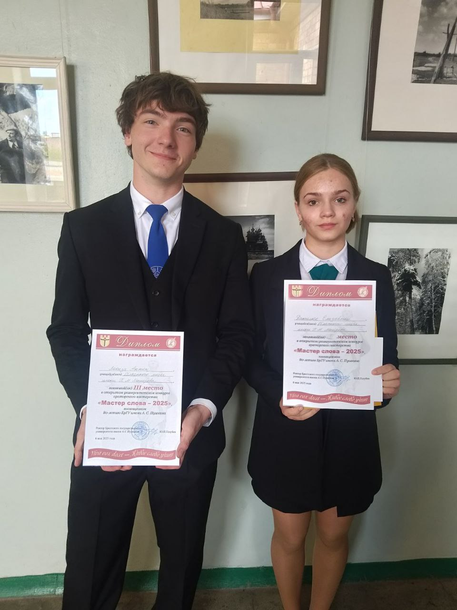

Трудоустройство молодежи в свободное от учебы время
Министерство образования сообщает, что в республике создана система по организации круглогодичной временной трудовой занятости обучающихся в учреждениях образования в свободное от учебы время в целях приобщения их к общественно полезному труду и получению необходимых трудовых навыков.
В настоящее время органами по труду, занятости и социальной защите формируются перечни организаций, готовых принимать на работу обучающихся с 14 лет без финансовой поддержки государства. Данные перечни организаций размещаются и поддерживаются в актуальном состоянии на информационном портале Государственной службы занятости (gsz.gov.by).
27 мая в ГУО "Брестский областной лицей имени П.М.Машерова" преподавателями Института Конфуция в УО "Брестский государственный университет имени А.С.Пушкина" организованы интерактивные занятия с учащимися лицея в рамках летнего лагеря по изучению китайского языка по окончанию учебного года
Преподаватели Института Конфуция познакомили учащихся с традиционным китайским праздником "Дуаньу" (праздник драконьих лодок), а также провели мастер-класс по каллиграфии и вырезанию из бумаги.
03 декабря 2024 г. между ГУО «Брестский областной лицей имени П.М.Машерова и Институт Конфуция в УО «Брестский государственный университет имени А.С. Пушкина» было подписано соглашение о сотрудничестве, в рамках которого стало возможным проведение подобных мероприятий.На страже цифровой безопасности
Вступительная кампания 2025
Вступительная кампания 2025
Государственное учреждение образования «Брестский областной лицей имени П.М.Машерова» объявляет набор учащихся на 2025/2026 учебный год в 10-е классы по следующим профилям обучения:
- филологический (с изучением на повышенном уровне учебных предметов «Русский язык», «Иностранный язык» (английский или немецкий));
- экономический (с изучением на повышенном уровне учебных предметов «Математика» и «Иностранный язык» (английский или немецкий));
- физико-математический (с изучением на повышенном уровне учебных предметов «Физика» и «Математика»);
- химико-биологический (с изучением на повышенном уровне учебных предметов «Химия» и «Биология»);
- правоведческий (с изучением на повышенном уровне учебных предметов «Обществоведение» и «Иностранный язык» (английский или немецкий));
Документы принимаются:
12.06.2025 с 9.00 до 18.00
13.06.2025 с 9.00 до 18.00
14.06.2025 с 9.00 до 18.00
15.06.2025 с 10.00 до 15.00
1. Заявление на имя директора по установленной форме с указанием учебных предметов (не более трех), которые выбраны для изучения на повышенном уровне, а также перечислены профили (не более двух).
2. Медицинская справка по форме, установленной Министерством здравоохранения.
3. Свидетельство об общем базовом образовании.
4. Документы, подтверждающие право лиц на льготы (при наличии права на льготы).
Дополнительно в приемную комиссию подается ксерокопия паспорта (двух последних разворотов и страницы с пропиской).
Абитуриенты (законные представители абитуриентов) могут представлять в приемную комиссию дипломы победителей III этапа республиканской олимпиады по учебным предметам и республиканского конкурса работ исследовательского характера.
Вступительные испытания будут проводиться с 17.06.2025 по 01.07.2025 в Брестском областном лицее имени П.М.Машерова (проспект Машерова, 25). Расписание вступительных испытаний размещено на сайте лицея.
На время вступительных испытаний иногородние учащиеся не обеспечиваются общежитием.
Начало вступительных испытаний – 10.00.
Телефон для справок: 40-58-51
Документы в приемную комиссию лицея может подать один из законных
представителей учащихся без самого учащегося
Документы в приемную комиссию лицея может подать один из законных
представителей учащихся без самого учащегося
ВНИМАНИЕ!
Заявление на имя директора можно скачать на сайте лицея (brestobllicey.by) в разделе «Поступающим» - «Заявление на 2025» и заполнить заранее.
День детства 2025
23 мая большая лицейская семья праздновала День Детства.
Это традиционное мероприятие погружения в удивительный мир чистых и непосредственных эмоций, искрометного юмора и внешних атрибутов субкультуры детства.
Республиканский последний звонок
Лучшие выпускники страны празднуют «Последний звонок»
Гомель – молодёжная столица-2025 – принимает сегодня республиканский праздник для выпускников учреждений общего среднего образования «Последний звонок». Ребята со всей страны прибыли в Гомель, чтобы вместе отметить это знаковое для них событие.
На него приглашены выпускники 11-х классов. Это победители олимпиад, республиканских и международных конкурсов, спортивных соревнований, медалисты. Наиболее результативным выпускникам вручили призы и подарки перед более чем полуторатысячной публикой.
Среди участников праздника и обучающиеся Брестского областного лицея имени П.М.Машерова:
- Булавин Кирилл, 11 «В» класс
- Попко Маргарита , 11 «Е» класс
- Свиржевская Анастасия, 11 «Е» класс
- Шиляев Андрей, 11 «В» класс
Выпускников приветствовал Министр образования Республики Беларусь Андрей Иванович Иванец.
«Это лучшие из лучших. Ребята, которые проявили себя в учёбе, в спорте, в творчестве, были активистами общественных молодёжных организаций. Конечно, это праздник и для всех 56 тыс. ребят, которые выпускаются из наших школ. Для них это первый шаг во взрослую жизнь, время очень волнительное и ответственное. И мы верим, что они успешно сдадут экзамены, пройдут тестирование и поступят в университеты», - подчеркнул он.
Для ребят подготовлена насыщенная культурная программа: торжественная линейка, возложение цветов на Аллее героев, интерактивные площадки, концерт популярных исполнителей, а также молодёжная дискотека. Во второй день ребята отправятся в мемориал «Детям — жертвам войны» в агрогородке Красный Берег Жлобинского района.
Умники и умницы 2025
В Брестском областном лицее имени П.М.Машерова состоялась традиционная церемония награждения учащихся лицея "Умники и умницы"
Традиционно в конце учебного года в нашем лицее чествуют лицеистов, которые достигли высоких результатов в учебе, спорте, в творчестве, а также педагогов, чей труд и профессионализм не позволяют сегодня лицею стоять на месте
Подарки из рук директора получили победители международных конкурсов и конференций, третьего и заключительного этапов республиканской олимпиады по учебным предметам, республиканских, областных и региональных конкурсов, конференций и олимпиад, творческих конкурсов и просветительских акций, спортивных соревнований разного уровня. Также были отмечены педагоги, внесшие огромный вклад в победы наших лицеистов.
Экскурсия на ОАО «Брестское мороженое»
Для учащихся 10 «А» и 10 «Б» классов Брестского областного лицея имени П.М.Машерова была организована экскурсия на ОАО «Брестское мороженое».
Ведущие технологи рассказали об ассортименте, выпускаемой продукции: сегодня это более 120 наименований, известных под брендом «Тимоша». Предприятие производит более 50-ти наименований натурального мороженого. Было очень интересно наблюдать за процессом производства от изготовления до упаковки продукции.
Приятным завершением экскурсии было угощение - мороженое!!!
Лицеист года – 2025
В нашем лицее состоялся традиционный конкурс «Лицеист года -2025»
В этом году на звание лицеист года претендовали 7 учащихся:
- Солдаткина Диана, 10 «Б»;
- Юркевич Михаил, 10 «В»;
- Климук Александра, 10 «Г»;
- Капуза Елизавета, 10 «Д»;
- Скороход Ангелина, 11 «В»;
- Косенкова Эмилия, 10 «Е»;
- Зиновик София, 10 «А».
В ходе конкурсных испытаний участники проявили свои таланты в творческом конкурсе, представили свои «Визитки» и продемонстрировали навыки красноречия в конкурсе ораторского мастерства. Участники приложили все усилия, чтобы убедить членов жюри и присутствующих в зале зрителей в том, что они активные, амбициозные, целеустремленные, выбрали для себя дорогу знаний и творчества.
Победители были определенны в различных номинациях:
✔ "Самый интеллектуальный" - Косенкова Эмилия, 10 "Е" класс;
✔ "Лучшее портфолио" - Капуза Елизавета, 10 "Д" класс;
✔ "Приз зрительских симпатий" - Скороход Ангелина, 11 "В" класс;
✔ "Самый творческий" - Зинофик Софья, 10 "А" класс;
✔ "Лучший оратор" - Солдаткина Диана, 10 "Б" класс;
✔ "Лучшая визитка" - Скороход Ангелина, 11 "В" класс.
"ЛИЦЕИСТ ГОДА - 2025" стали Юркевич Михаил, 10 "В" класс и Климук Александра, 10 "Г" класс
Церемония награждения учащихся, победителей заключительного этапа республиканской олимпиады, и педагогов, их подготовивших
Учащимся, победителям заключительного этапа республиканской олимпиады, и педагогам, их подготовивших присуждены премии Брестского облисполкома
В числе награждаемых:
✔ Томкович Александр, учащийся 11 "Б" класса, победитель заключительного этапа республиканской олимпиады по географии (диплом 3 степени)
✔ Трофимчук Екатерина Васильевна , учитель географии высшей квалификационной категории
Соревнования по легкой атлетике
На базе областного спорткомплекса «Брестский» прошли соревнования по лёгкой атлетике в программе городской спартакиады школьников
Журавель Дарья (10 «Д» класс) заняла 2-е место в прыжках в длину с разбега с результатом 4.70 м. Это новый рекорд лицея! В прыжках в высоту Дарья заняла 2-е место с результатом 140 см, обновив рекорд лицея.
Данилюк Елизавета (10 «Б») заняла 3-е место в беге на 300 м, показав результат 51.56 секунд. Поздравляем Дарью и Лизу!

А ты знаешь как пользоваться огнетушителем?
Правила безопасности в жару
При пожаре в доме(квартире)

Мастер слова 2025
06.05.2025 состоялся открытый университетский конкурс ораторского мастерства "Мастер слова-2025", посвященный 80-летию БрГУ имени А.С.Пушкина
Диплом 2 степени завоевала Данилюк Елизавета, учащаяся 10 "Б" класса (руководитель-Бурина Елена Анатольевна, учитель русского языка и литературы)
Диплом 3 степени завоевал Лакиза Антон, учащийся 11 "В" класса (руководитель-Бурина Елена Анатольевна, учитель русского языка и литературы)
Поздравляем наших учащихся и Елену Анатольевну и желаем дальнейших побед и успехов в выбранном направлении!
По итогам XX открытой региональной научно-практической конференция "С наукой - в жизнь" 15 научно-исследовательских работ наших лицеистов были отмечены дипломами
Диплом I степени:
Братчук Ангелина (научный руководитель - Рубец Р.С.)
Свиржевская Анастасия (научный руководитель - Трофимчук Е.В.)
Климук Александра (научный руководитель - Ленивко С.М.)
Диплом II степени:
Доценко Ефим, Румас Сергей (научный руководитель - Белоусова Е.С.)
Булавин Кирилл, Скороход Ангелина (научный руководитель - Жигаревич Ю.К.)
Ананьева Полина (научный руководитель - Бурина Е.А.)
Ганчук Анна (научный руководитель - Галушко Н.Н.)
Борецкая Анна, Давидюк Полина (научный руководитель - Новосельчан Е.В., Самосюк И.В.)
Косенкова Эмилия (научный руководитель - Новосельчан Е.В.)
Мойсеюк Анна, Веремейчук Екатерина (научный руководитель - Евтушенко А.Г.)
Диплом III степени:
Гаранкина Анна (научный руководитель - Бурина Е.А.)
Гаранкина Анна (научный руководитель - Новосельчан Е.В.)
Ананьева Полина (научный руководитель - Алисова А.Н.)
Свиржевская Анастасия (научный руководитель - Альхименко А.А.)
Белый Иван (научный руководитель - Ленивко С.М.)
Поздравляем начинающих исследователей и их научных руководителей! Лицей вами гордится!


О нас пишут
Больш за 100 навучэнцаў школ, гімназій, ліцэяў і ўніверсітэтаў краіны сабрала ХХ адкрытая навукова-практычная канферэнцыя «З навукай — у жыццё» ў Брэсце, паведамляе карэспандэнт «Настаўніцкай газеты».
ХХ открытая региональная научно-практическая конференция "С наукой - в жизнь" прошла в Брестском областном лицее имени П.М.Машерова
Работа конференции проходила в 12 секциях, где состоялась защита исследовательских работ и проектов.
В юбилейном году результаты своего труда презентовали 24 учреждения образования со всей республики.
Всего на конференции было представлено 98 исследовательских работ и приняли участие более 120 учащихся.
Больше всего работ было представлено в секции "Язык, культура, современность", "Мир в зеркале иностранного языка (английский)", "Вопросы географии и экологии", "Актуальные вопросы информатики". Впервые в истории конференции были представлены работы в секции китайского языка.


День открытых дверей
17 мая 2025 года в Государственном учреждении образования «Брестский областной лицей имени П.М.Машерова» пройдет День открытых дверей.
Начало в 11.00.
Приглашаются учащиеся 9-х классов и их законные представители.
Научно-практическая конференция «С наукой – в жизнь»
Семинар «Формирование основ финансово грамотного поведения учащихся»
Новосельчан Е.В., учитель истории и обществоведения высшей квалификационной категории, приняла участие в онлайн семинаре «Формирование основ финансово грамотного поведения учащихся», организованным учреждением образования «Могилевский государственный областной институт развития образования».
Семинар собрал множество участников из разных учебных заведений и стал отличной возможностью расширить знания в данной области. На семинаре были рассмотрены вопросы формирования финансовой грамотности учащихся, предложены практико-ориентированные задания для развития финансовой грамотности учащихся, белорусская модель развития финансовой грамотности детей и молодежи: матрица финансовых компетенций учащихся.

Расписание платных подготовительных курсов
19.04.2025 состоятся занятия платных подготовительных курсов для абитуриентов:
по математике (10.40, кабинет 6) (для тех, кто выбрал физику)
по английскому (11.30, кабинет 3 )
по химии (11.30, кабинет 1)
«Информационные технологии»
Итоги V городского конкурса проектных и исследовательских работ учащихся «Дерзай мыслить» (г. Санкт-Петербург).
Дипломом 1 степени отмечена работа Булавина Кирилла, учащегося 11«В» класса ГУО «Брестский областной лицей имени П.М.Машерова» и Кудан Татьяны из УО «Национальный детский технопарк». Научные руководители – Жигаревич Юрий Константинович, учитель информатики ГУО «Брестский областной лицей имени П.М.Машерова» и Дубатовка Владислав Витальевич, заведующий лабораторией «Робототехника»УО «Национальный детский технопарк».
Дипломом 2 степени отмечена работа Скороход Ангелины, Булавина Кирилла, учащихся 11 «В» класса ГУО «Брестский областной лицей имени П.М.Машерова», научный руководитель – Жигаревич Юрий Константинович, учитель информатики
ГУО «Брестский областной лицей имени П.М.Машерова».
Итоги заключительного этапа республиканской олимпиады
Итоги заключительного этапа республиканской олимпиады по учебным предметам
- Томкович Александр, учащийся 11 «Б» класса, - диплом III степени (учебный предмет «География», учитель - Трофимчук Екатерина Васильевна);
- Попко Маргарита, учащаяся 11 «Е» класса, - похвальный отзыв (учебный предмет «Белорусский язык» и «Белорусская литература», учитель - Киргинцева Людмила Юрьевна);
- Шиляев Андрей, учащийся 11 «В» класса, - похвальный отзыв (учебный предмет «Физическая культура и здоровье», учитель – Дубенецкий Олег Борисович).
Поздравляем победителей и желаем успехов в дальнейшем!


«Информационные технологии»
Подведены итоги Республиканской конференции учащихся учреждений общего среднего образования «Мой первый шаг в науку», организованной УО «Белорусский государственный технологический университет».
В подсекции «Информационные технологии» дипломом 1 степени отмечена работа Булавина Кирилла и Скороход Ангелины (научный руководитель - Жигаревич Ю.К., учитель информатики высшей квалификационной категории)Поздравляем Кирилла, Ангелину и Юрия Константиновича с победой! Желаем дальнейших успехов, новых побед, уверенности в себе и своих силах!
День открытых дверей
День открытых дверей
22 марта 2025 года (суббота) Брестский областной лицей приглашает учащихся 9-х классов и их родителей на День открытых дверей. Начало – 11.00.
14 ноября в Брестском областном лицее имени П.М.Машерова прошел «круглый стол»
14 ноября в Брестском областном лицее имени П.М.Машерова прошел «круглый стол», посвященный вопросам профилактики правонарушений и наркомании среди несовершеннолетних. С обучающимися 10-х классов лицея встретились: старший помощник прокурора г. Бреста Дубешко Татьяна Владимировна, участковый инспектор по делам несовершеннолетних Новик Юлия Сергеевна, судья суда Ленинского района г.Бреста Калина Святослав Игоревич. Татьяна Владимировна Дубешко, ссылаясь на статьи Уголовного кодекса Республики Беларусь (ст. 327-332 УК РБ, ст. 328 УК РБ, ст. 168 УК РБ), проинформировала об ответственности за совершаемые несовершеннолетними правонарушения. Законом Республики Беларусь «О массовых мероприятиях в Республике Беларусь» четко определен порядок проведения инициатив, как собрания, митинги, уличные шествия, демонстрации и пикетирование. Любое несоблюдение установленных требований влечет административную либо уголовную ответственность. Юлия Сергеевна Новик предложила участникам круглого стола просмотр видеоролика, в котором показана судьба подростка-правонарушителя. Итоги «круглого стола» были подведены судьей Святославом Игоревичем Калиной. Он квалифицированно ответил на ряд разноплановых вопросов лицеистов.


09.10.2024 на базе ГУО «Брестский областной лицей имени П.М. Машерова» состоялось выездное судебное заседание
09.10.2024 на базе ГУО «Брестский областной лицей имени П.М. Машерова» состоялось выездное судебное заседание по обвинению гражданина К., который совершил преступление, предусмотренное частью 1 статьи 328 УК Республики Беларусь. Ребята увидели как проходит судебное заседание, при этом подчиняясь требованиям поведения в зале судебного заседания! После процесса с ребятами состоялся «живой» разговор, в ходе которого поднимались различные правовые темы. Старший помощник прокурора г. Бреста Ф.С. Лешок пояснил: «Профилактика преступлений среди несовершеннолетних, совершаемых ими или над ними, является приоритетной задачей социального направления политики государства. Она включает в себя воспитательные, правовые, организационные и другие меры воздействия, благодаря которым выявляются и ликвидируются обстоятельства и условия, приводящие к совершению правонарушений. Выездное судебное заседание на базе лицея является влажной составляющей профилактической работы и работы по правовому просвещению молодежи. Уверен в том, что ребята сделают для себя правильные выводы из судебного заседания, а возможно в будущем свяжут свою профессиональную деятельность с правоохранительной системой».